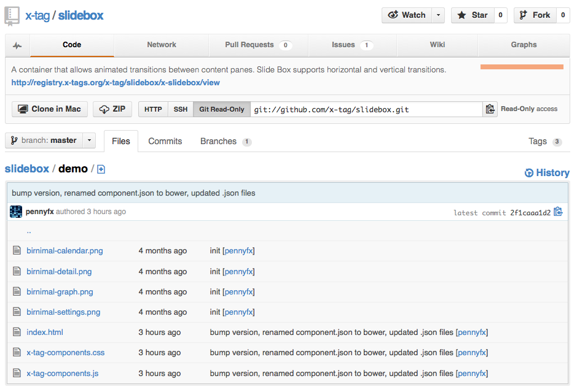
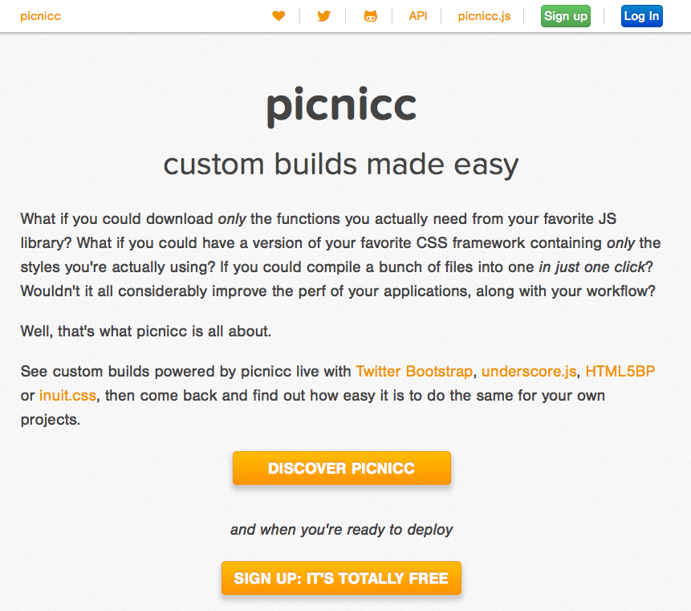

Building Modular Web Applications:
How To Build a Good Component
UGH SO VERBOSE WTF
Let's be more concise
Let's be more elegant as developers
Only What You Need
@angelinamagnum
Sunny Vancouver
Mozilla
Let's talk about brains
Cognition
Working Memory
Attention
Cognitive Load :(
Let's be nicer to our brains!
Reduce Cognitive Load & Be A Happier Dev
Brains are good at chunking information
But little chunks and not many at a time
Let's write programs that are easier think about
Why would we do this?
Easier to spool up new devs on your project
Easier to maintain and refactor
How do we do this?
Modules vs Components
Modules Plugins vs Components
1. Write Tidy Components

2. Write Small Components
"The best things that can be said about
software is that it is too small."
- James Halliday/substack during
Code Collage at JSConfEU 2012
3. Write Modular Components
Best practices: Summarized
Best practices: Summarized
1. Do one thing really well
2. Have simple interfaces to communicate but remain loosely coupled
3. Are reusable as much as possible (modular)
4. Ideally they are encapsulated
4. Write Encapsulated Components
Modules vs Components vs... Web Components?
Web Components

"Web Components": an umbrella term
Shadow DOM
createShadowRoot();
the glue
(DOM + style encapsulation boundaries)
HTML Templates
<template>
the blueprints
(inert chunks of clonable DOM: for use later)
Custom Elements
<x-unicorn>
the multitool that begets new tools
(create-your-own-elements)
HTML Imports
<link rel="component' href="unicorn.html">
the loader - does what's on the tin
Write Encapsulated Components
What about devs that consume your code?
Picni.cc
http://picni.cc
http://afabbro.github.io/jquery-picnicc-example/
http://github.com/afabbro/jquery-picnicc-example/
*not a silver bullet, but a starting point
Who's the Programmer?